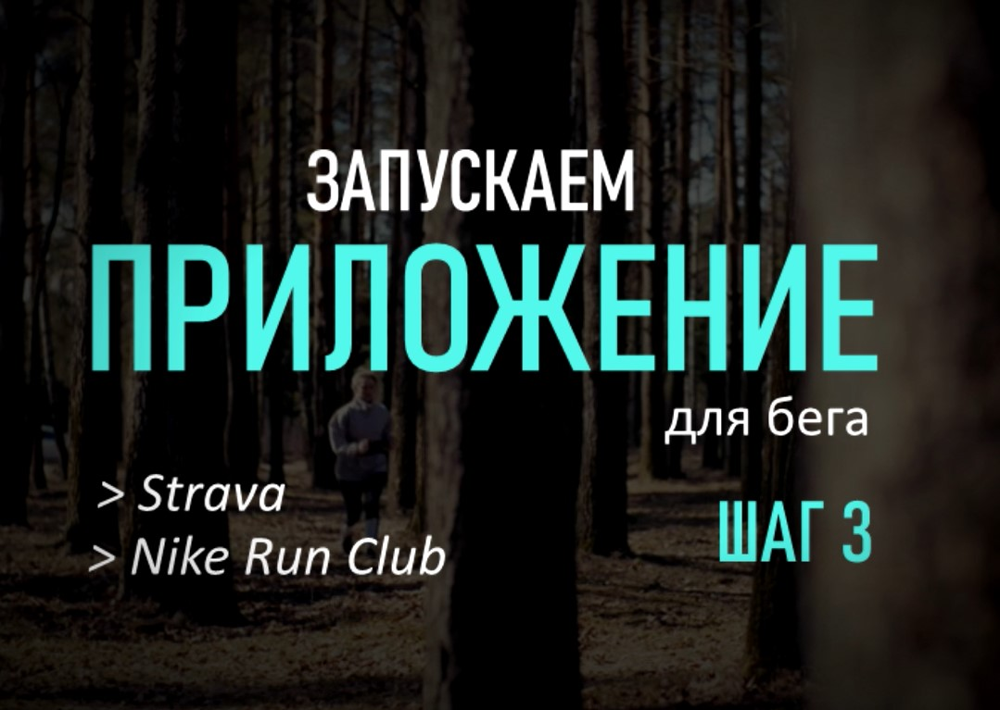

Если времени совсем нет, достаточно сделать хотя бы 3 упражнения:
- круговые движения в бедрах;
- круговые движения в коленях;
- круговые движения стопами.

Как одеться, чтобы было не жарко и не холодно?
Существует одно простое правило: представьте, как бы вы вышли на прогулку, если бы на улице было на 10 градусов теплее
Например, если сейчас на улице +10 и ветер. Значит нужно надеть лосины, футболку и захватить с собой легкую ветровку. Так вы бы оделись на погоду в +20
Также я рекомендую всегда прикрывать уши (повязка на голову), в прохладую погоду прикрывать ахилово сухожилие и брать с собой поясную спортивную сумку, чтобы руки были свободны
Чтобы избежать травм, перед бегом обязательно нужно делать небольшую разминку
Во время бега задействованы все мышцы кора. А это означает, что разминать нужно не только ноги. У меня на разминку уходит 5 минут. Я разминаю шею, плечи, руки, спину, бедра, колени, стопы
Если времени совсем нет, достаточно сделать хотя бы 3 упражнения:
Пример быстрой разминки можно посмотреть по этой ссылке YouTube
Заранее нужно установить беговое приложение на телефон и высчитать пульсовые зоны
Как определить свою пульсовую зону? Вбить в интернете «Расчет пульсовых зон» и один раз сделать по инструкции. Далее бегать (или ходить быстрым шагом) в аэробной пульсовой зоне. Для этого нужны часы или фитнес браслет, они показывают пульс
Nike и Strava в данный момент не работают в России, в качестве аналога можно использовать Goal-Fitness, или просто запускать режим тренировки «Бег» в часах. Но в приложении, в отличии от часов или фитнес-брастела, после пробежки еще будет отрисовываться карта
Для меня оптимальным является пульс около 155-160 уд/мин. Если он увеличивается – сбавляю темп бега
Хочу немного рассказать о технике бега
Бежим мы за счет силы падения. То есть мы думаем не о ногах, а о корпусе. Спина ровная, все тело прямое, начинаем падать, как полено, вперед и просто добавляем перестановку ног. Ноги сами начинают включаться в работу. Но опять же напоминаю, внимание направленно именно на прямой корпус и силу падения
Ну и пару слов о заминке
Бег – это тренировка мышц. Соотстветственно, как и после любой другой тенировки, мышцы после бега «забиваются» и могут болеть
Чтобы ускорить процесс восстановления после нагрузки и снизить риск получения травм – после бега нужно сделать небольшую растяжку
Я делаю заминку по по этому видео. Вторая половина видео именно об этом
| Неделя | ПН | ВТ | СР | ЧТ | ПТ | СБ | ВС |
|---|---|---|---|---|---|---|---|
| 1 неделя | 1 км + 200 м пешком | 1 км + 200 м пешком | 1 км + 200 м пешком | отдых | 1,2 км + 200 м пешком | 1,2 км + 200 м пешком | отдых |
| 2 неделя | 1,5 км + 100 м пешком | 1,5 км + 100 м пешком | 1,5 км + 100 м пешком | отдых | 1,7 км + 100 м пешком | 1,7 км + 100 м пешком | отдых |
| 3 неделя | 2 км | 2 км | 2 км | отдых | 2 км | 2 км | отдых |
| 4 неделя | 2,5 км | 2,5 км | 2,5 км | отдых | 3 км | 2 км | отдых |